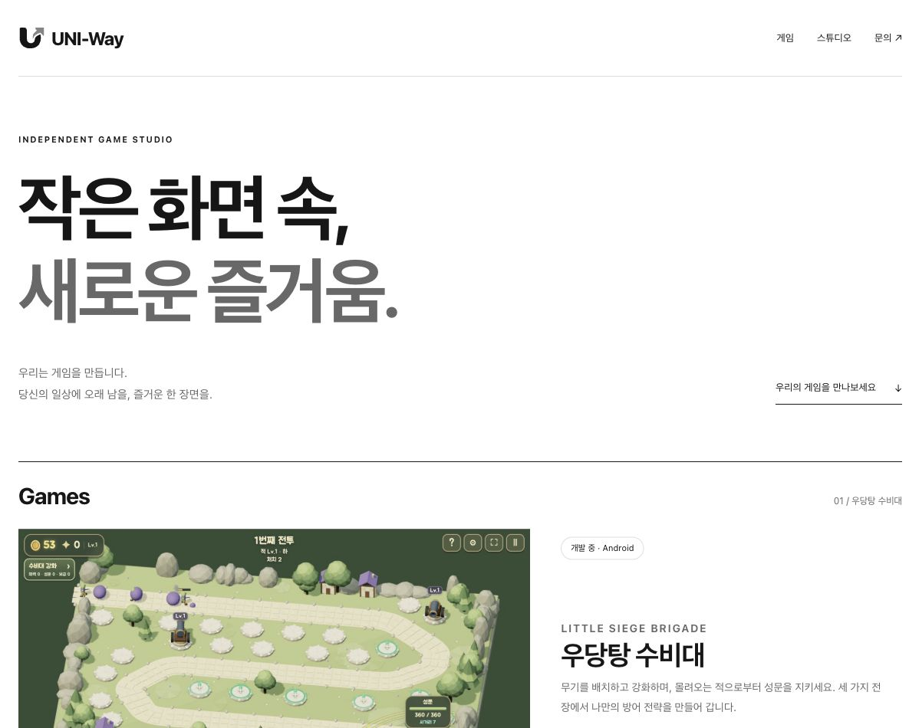
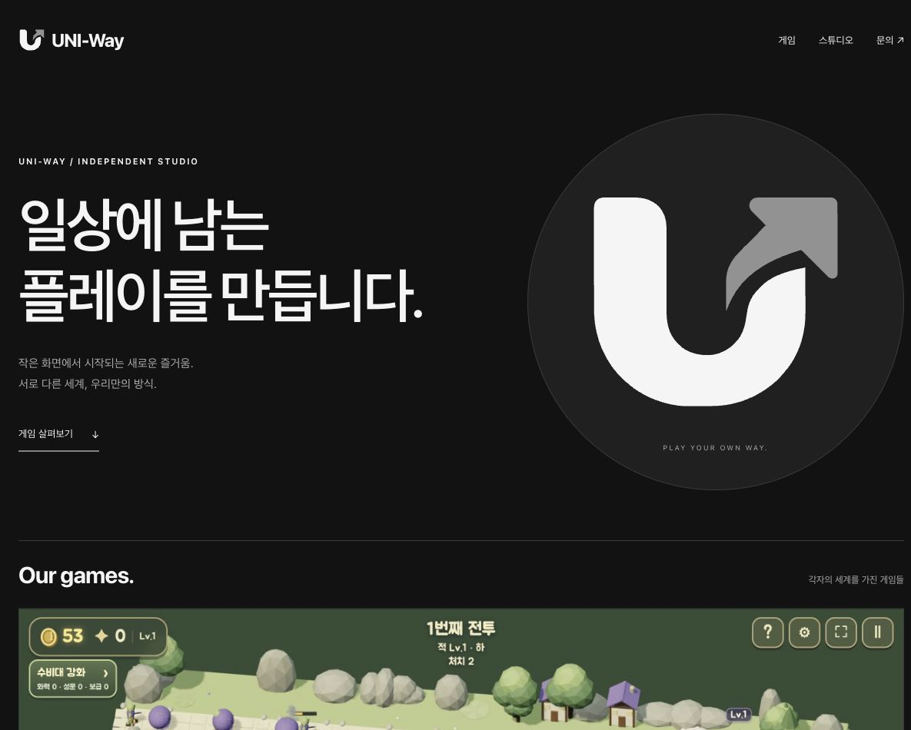
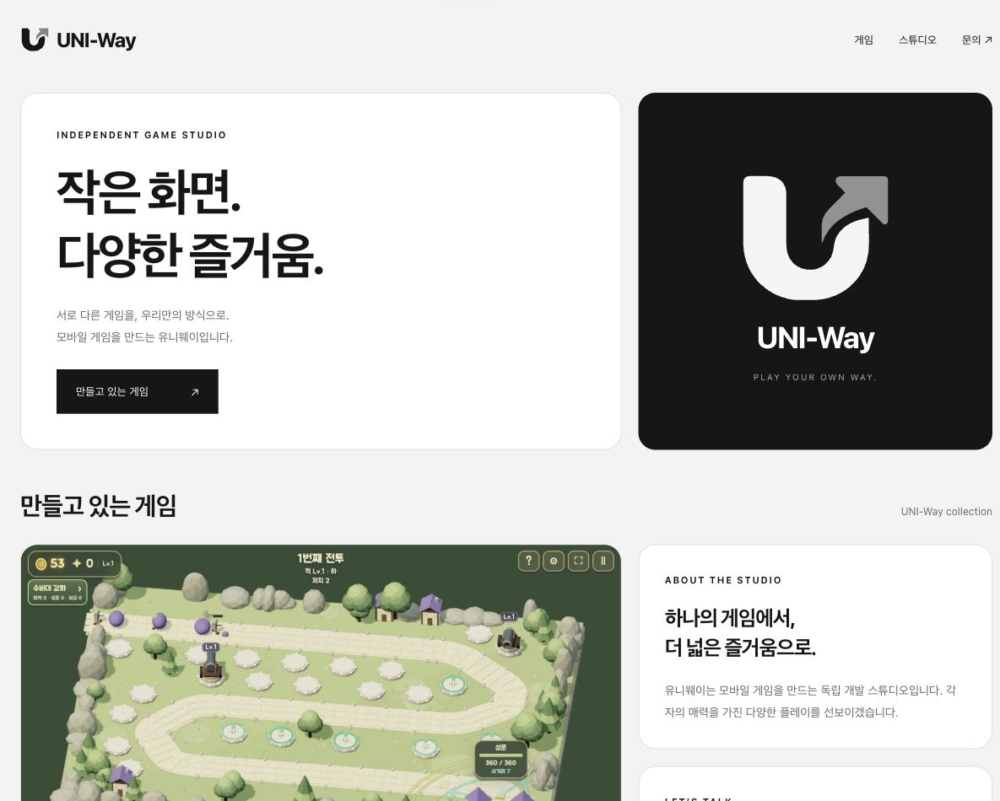

게임마다 고유한 색을 담을 수 있는 중립적인 홈페이지.마음에 드는 시안을 열어 전체 페이지와 밝은·어두운 테마를 살펴보세요.

장식을 덜고 글자와 여백에 집중했습니다.가장 단정하고 가벼운 인상입니다.

검은 무대 위에 로고와 게임을 강조했습니다.차분하면서도 존재감이 뚜렷합니다.

게임과 스튜디오 정보를 카드로 정리했습니다.여러 게임을 차례로 추가하기 좋습니다.